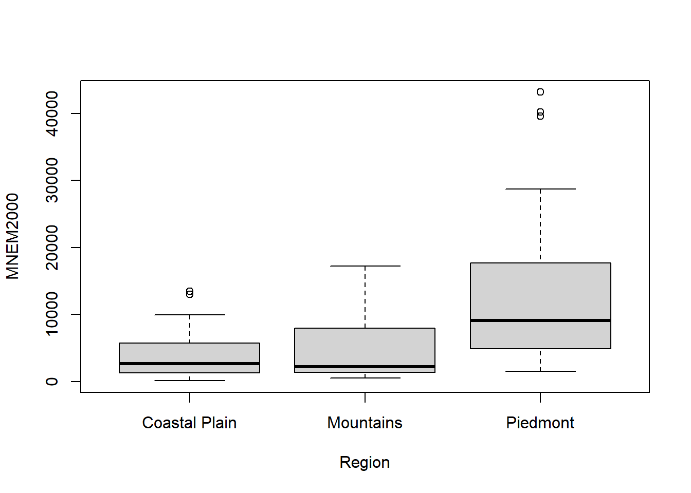
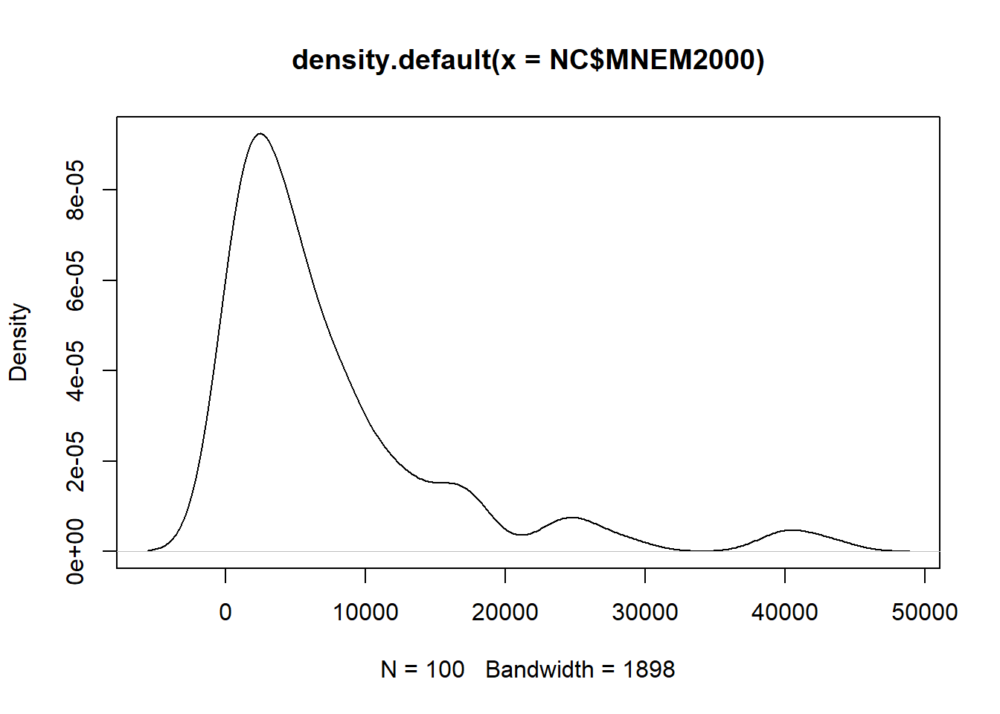
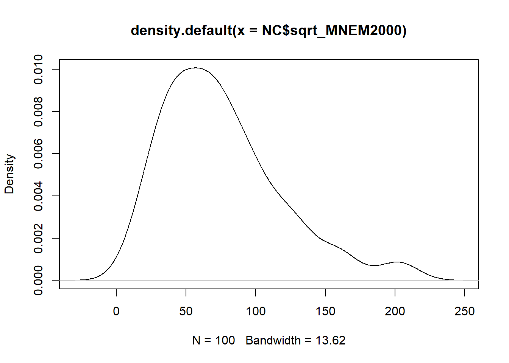
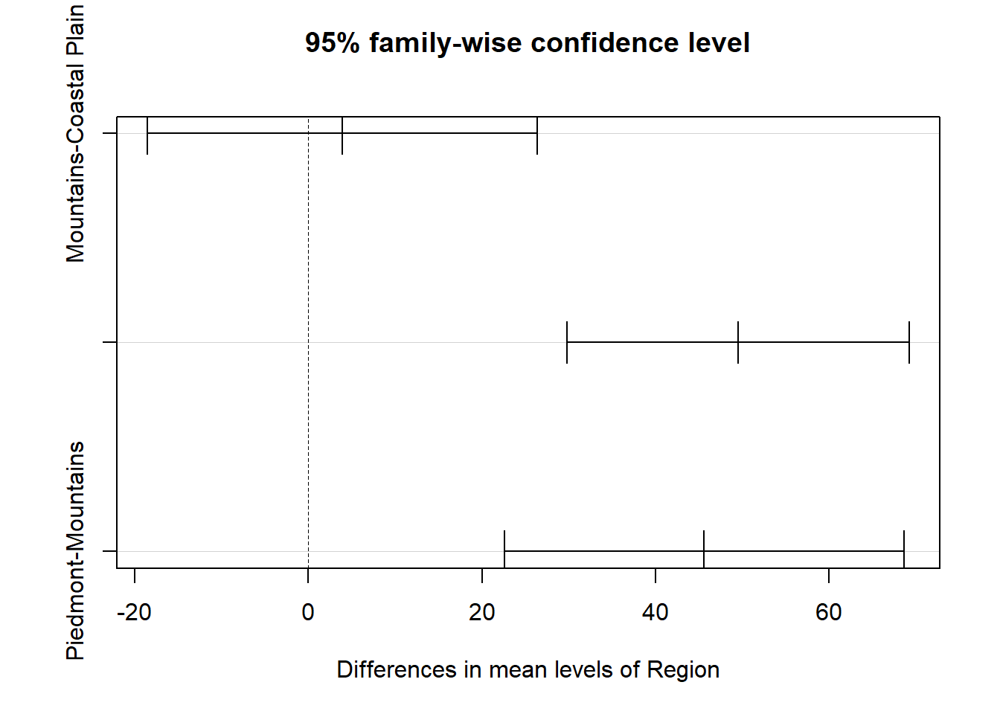

Analysis of Variance (ANOVA) describes a set of statistical
models used to analyze the differences among means. A number of
functions exist in R (such as the aptly-named anova()) to
conduct an ANOVA, each with strengths and weaknesses. Doing an ANOVA in
R therefore involves more than just calling a single function. In this R
Module, we’ll review the basic steps of an ANOVA and demonstrate the
related tests you can use if your data doesn’t conform to the basic
assumptions of the test outlined below.
The basic form of ANOVA makes the following assumptions:
We can test each of these assumptions statistically before proceeding with ANOVA.
Before we get started talking about ANOVA in depth, let’s take a
moment to read in the data we need. When our data are stored in a
.zip, we need to extract the files. Of course, we could do
this manually, but R can do this too!
We can use the unzip() function, which takes two inputs,
zipfile, or the name of the file we want to unzip, and
exdir, the ‘output folder’. Reading the documentation for
this function, the exdir argument creates the folder if
necessary.
unzip(
zipfile = "data/NC_REGION.zip",
# The function choose.dir() allows us to interactively choose a folder;
# similarly, the file.choose() function gives us an interactive window to
# select a folder.
exdir = choose.dir()
)If we now navigate to the folder we extracted our .zip
to, we’ll see a Shapefile called NC_REGION.shp. As always,
when working with Shapefiles, you need to have all the auxiliary files
nearby.
For the moment, let’s demonstrate ANOVA as if the data we have
conform to these assumptions. Like in previous labs, we’ll load
Shapefiles with the sf package.
library(sf)
# Replace the argument inside `read_sf()` with the path to your Shapefile
NC <- read_sf("data/NC_REGION/NC_REGION.shp")Let’s take a look at our data:
View(NC)One thing we need to do is convert our Region column
from character to factor:
NC$Region <- as.factor(NC$Region)Then, looking at our Region column, we can see the
number of counties in each region. Because we have a different number of
observations (counties) in each region, our design is ‘unbalanced’:
summary(NC$Region)## Coastal Plain Mountains Piedmont
## 41 23 36Let’s check out how the manufacturing jobs stored in the variable
MNEM2000 interact with our new regional categorization by
creating a boxplot. Even though boxpots use median values to display
variation rather than mean values, they still show us the approximate
‘middle’ of each variable by region and their respective dispersion.
# We can use base R to make a simple boxplot
boxplot(MNEM2000 ~ Region, data = NC)
The Piedmont region looks a bit more dispersed than the other two and the median is shifted higher. Is it enough for us to detect a difference using ANOVA? Let’s find out.
Because we have an unbalanced design, the base R ANOVA function isn’t quite the best choice, but we’ll call it to see what it returns.
anova <- aov(MNEM2000 ~ Region, data = NC)
print(anova)## Call:
## aov(formula = MNEM2000 ~ Region, data = NC)
##
## Terms:
## Region Residuals
## Sum of Squares 1870914725 5528223748
## Deg. of Freedom 2 97
##
## Residual standard error: 7549.304
## Estimated effects may be unbalancedsummary(anova)## Df Sum Sq Mean Sq F value Pr(>F)
## Region 2 1.871e+09 935457362 16.41 7.25e-07 ***
## Residuals 97 5.528e+09 56991997
## ---
## Signif. codes: 0 '***' 0.001 '**' 0.01 '*' 0.05 '.' 0.1 ' ' 1Notice that the results first warn us about our unbalanced samples.
In both sets of results, we’re given some key information. The input for
the nominator in the ANOVA calculation is provided by
Region, and the denominator is provided in
Residuals. The calculated estimates of the variance between
the sample means (nominator) and within the samples themselves
(denominator) are provided the degrees of freedom needed to plot the
F-distribution. In our case, we’ll have an F distribution of \((2,97)\). This distribution is used to
calculate the critical value of F at an alpha of \(0.05\), the default for the test.
The calculated F-Statistic is 16.41, which means the
numerator is about 16 times the denominator. This illustrates a big
difference between regions and the \(p\)-value for that F statistic is \(7.25\times10^{-7}\), which is considerably
less than \(0.05\). Thus, at \(\alpha = 0.05\), we can reject the null
hypothesis.
Another version of ANOVA is called the One-way test of variance,
found in the oneway.test() function. This version tests
whether two or more samples from normal distributions have the same
means, but the variances are not necessarily assumed to be equal. Using
this function with the var.equal = TRUE argument, the
results should be identical to those from aov():
oneway.test(MNEM2000 ~ Region, data = NC, var.equal = TRUE)##
## One-way analysis of means
##
## data: MNEM2000 and Region
## F = 16.414, num df = 2, denom df = 97, p-value = 7.246e-07Setting var.equal = FALSE leads to differing
results:
oneway.test(MNEM2000 ~ Region, data = NC, var.equal = FALSE)##
## One-way analysis of means (not assuming equal variances)
##
## data: MNEM2000 and Region
## F = 11.237, num df = 2.000, denom df = 46.631, p-value = 0.000104If we wish to test if our variances are homogeneous, we can use a test called the Bartlett’s test of Homoscedasticity. This test examines the null hypothesis that the variances in each of the set of samples are the same. As the test statistic gets larger, we’re more likely to reject the null hypothesis (i.e., as the statistic increases, the variances are more likely to not be homogeneous).
bartlett.test(MNEM2000 ~ Region, data = NC)##
## Bartlett test of homogeneity of variances
##
## data: MNEM2000 by Region
## Bartlett's K-squared = 48.261, df = 2, p-value = 3.314e-11In this case, we should reject the null hypothesis, which mean we
need to run oneway.test() with
va.equal = FALSE.
oneway.test(MNEM2000 ~ Region, data = NC, var.equal = FALSE)##
## One-way analysis of means (not assuming equal variances)
##
## data: MNEM2000 and Region
## F = 11.237, num df = 2.000, denom df = 46.631, p-value = 0.000104By accommodating the differences in variances between the samples, our calculation for the F-Statistic changes (note the smaller degrees of freedom; 46.631 vs. 97). However, we can still reject the null hypothesis at \(\alpha = 0.05\). This suggests that manufacturing is different in at least one of the regions of North Carolina.
There’s one last condition to consider that could be impacting our
results. ANOVA assumes that the sampled variable is normally
distributed; we can check this as well. First, let’s make a simple
density plot of MNEM2000. If it is approximately normal, we
should see a roughly symmetric curve.
plot(
density(x = NC$MNEM2000)
) Our graph isn’t normal; note the positive skew. We can test the assumption of normality statistically using the Shapiro-Wilk Normality Test.
shapiro.test(NC$MNEM2000)##
## Shapiro-Wilk normality test
##
## data: NC$MNEM2000
## W = 0.74296, p-value = 6.126e-12Because the \(p\)-value is statistically significant, we can reject the null hypothesis (our distribution is not normal).
Our variable is a long way from normal, but there are several methods
to use to normalize our data. Common transformations include square root
(sqrt()) and \(log_{}10\)
(log10()). Let’s try a square root transformation to see if
it improves our results:
# We can use the `mutate()` function from `dplyr` to add and change columns
library(dplyr)
NC <- NC %>%
mutate(
sqrt_MNEM2000 = sqrt(MNEM2000)
)
plot(density(NC$sqrt_MNEM2000))
Let’s test it with Shapiro-Wilk:
shapiro.test(NC$sqrt_MNEM2000)##
## Shapiro-Wilk normality test
##
## data: NC$sqrt_MNEM2000
## W = 0.92926, p-value = 4.521e-05We’re closer to normal, but not enough to fail to reject the \(H_0\) from the Shapiro-Wilk test. Still, it’s better than before, so we should try our ANOVA again using the transformed manufacturing variable:
anova_sqrt <- oneway.test(sqrt_MNEM2000 ~ Region, data = NC, var.equal = FALSE)
anova_sqrt##
## One-way analysis of means (not assuming equal variances)
##
## data: sqrt_MNEM2000 and Region
## F = 16.822, num df = 2.000, denom df = 52.498, p-value = 2.263e-06Our test detects a stronger significant difference (i.e., lower \(p\)-value). The tests are more sensitive to
deviations from the assumption of normality than they are to the
assumption of homogeneity of variances. Since our data still isn’t very
normal, we may want to consider a nonparametric, “distribution-free”
version of the test. Fortunately, there are versions of ANOVA that don’t
require normally distributed data; we’ll use one called the
Kruskal-Wallis test. It produces different test statistics, but the
interpretation is very similar to aov() and
oneway.test().
kruskal.test(sqrt_MNEM2000 ~ Region, data = NC)##
## Kruskal-Wallis rank sum test
##
## data: sqrt_MNEM2000 by Region
## Kruskal-Wallis chi-squared = 27.64, df = 2, p-value = 9.954e-07It appears that we’re finding a similar effect when we use either a transformed variable or a nonparametric test. But which region (or regions) account for the difference? We have one last test to perform, called the Tukey Multiple Comparisons of the Means Test. This test creates confidence intervals for the difference of sample means for each pair of samples in turn. The \(H_0\) is that the confidence interval should contain 0, based on the assumption that the samples are from the same population. A low \(p\)-value for the confidence interval means that one of the two samples is different.
aov <- aov(sqrt_MNEM2000 ~ Region, data = NC)
tukey <- TukeyHSD(aov)
tukey## Tukey multiple comparisons of means
## 95% family-wise confidence level
##
## Fit: aov(formula = sqrt_MNEM2000 ~ Region, data = NC)
##
## $Region
## diff lwr upr p adj
## Mountains-Coastal Plain 3.921318 -18.54440 26.38703 0.9093413
## Piedmont-Coastal Plain 49.508376 29.81191 69.20484 0.0000001
## Piedmont-Mountains 45.587058 22.56750 68.60661 0.0000241The test \(p\)-values are smallest when the Piedmont region is considered(i.e., Piedmont/Coastal Plains and Piedmont/Mountains). This suggests that the Piedmont is the region most likely to be different than the others. A visual comparison of the confidence intervals helps illustrate the point.
plot(tukey)
If two regions are governed by the same probability distribution (same population), we would expect differences of their respective sample means to be close to 0. The Tukey test calculates pairwise confidence intervals for each possible pair combination. If the CIs don’t include zero,we have evidence that they are different. The Piedmont-Mountains CI and Piedmont-Coastal Plain CI (not labeled, but middle category on the plot) does not include 0 at all (it also has the lowest p-values in the results). The Mountains-Coastal Plain CI does include 0. The Piedmont region is different and the effect identified by the ANOVA tests is because of this difference.
Are these results definitive enough for us to really reject the ANOVA null hypothesis? I would agree that results are consistent about the Piedmont region, and our ANOVA result would still remain significant if we dropped our alpha from 0.05 to, say, 0.01. If this was not the case, we could redraw the regions or perform different transformations of the manufacturing counts to produce different or more definitive results. This illustrates the sometimes iterative nature of statistics – the findings of one process can lead us back to revisit early efforts that require us to repeat our analysis again later.
In an R Markdown (.Rmd, see R Module 4) Report, repeat the
steps above for either the MNEM1990 or data of your own
(e.g., land cover, census)`. Your Report should include:
© 2022 brownhr & M. Sugg. v.0.0.8